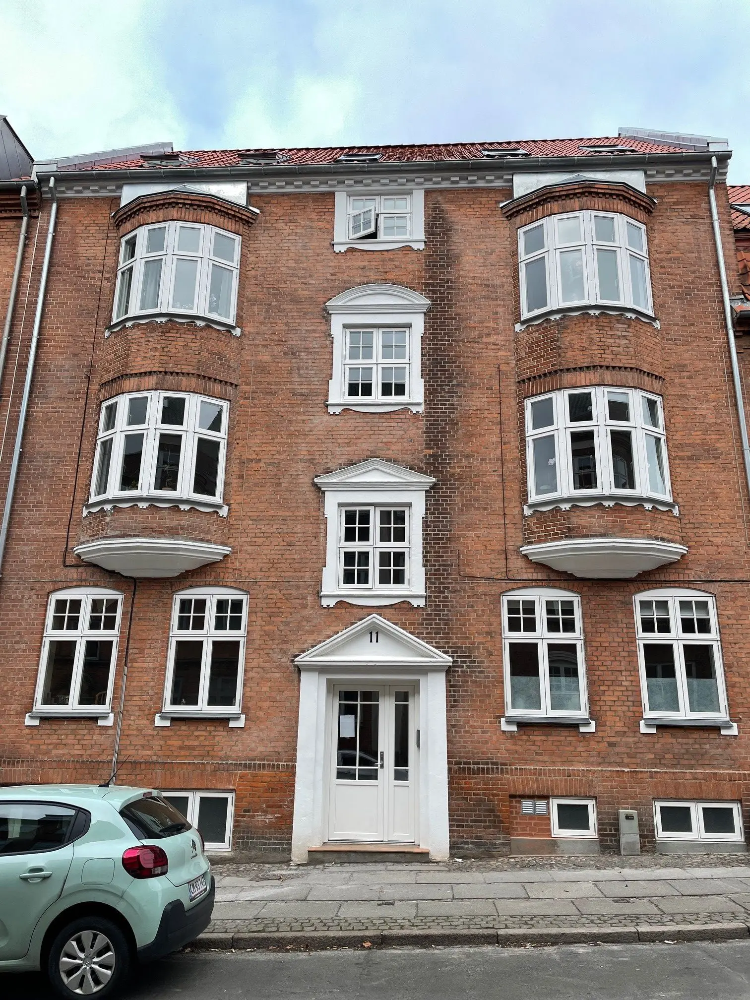

Tordenskjoldsgade 11
En af Ejendomsselskabet Rubins ejendomme. Har du spørgsmål om adressen, så ring eller skriv til os.
1 ledig lejlighed på adressen
Se detaljerne nedenfor, eller ring og hør om fremvisning.

En af Ejendomsselskabet Rubins ejendomme. Har du spørgsmål om adressen, så ring eller skriv til os.
Se detaljerne nedenfor, eller ring og hør om fremvisning.